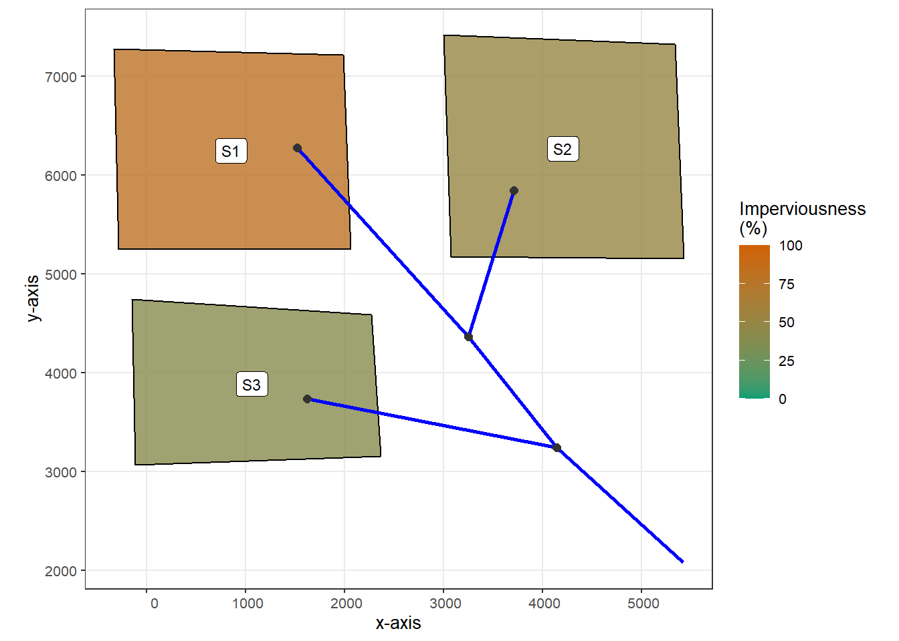
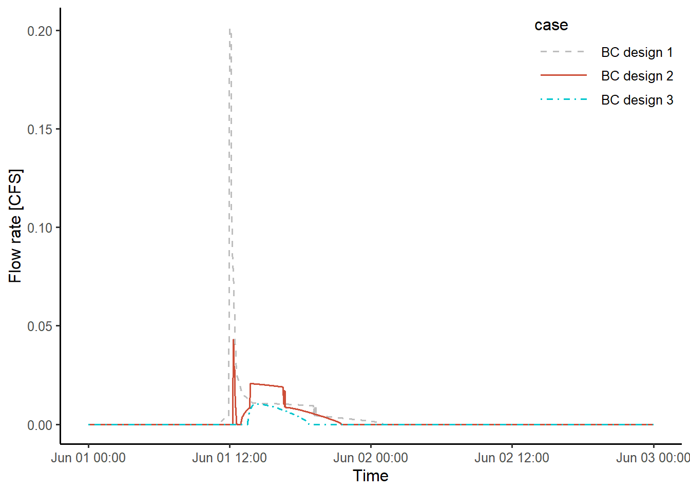
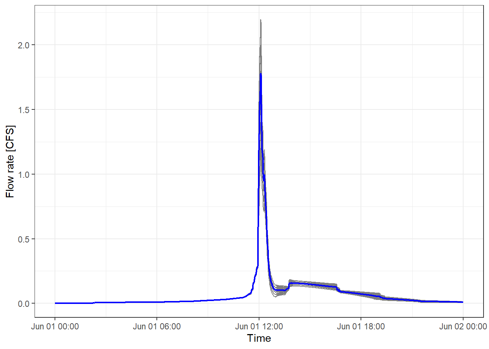

This examples shows the procedure of using the toolbox when there are multiple subcatchments, and multiple green infrastructures (GIs) of different designs are installed in each subcatchment. The data used in this study can be found in example2 folder. The simulations are driven by a 60 mm SCS type III 24-hr design storm.
The studied catchment (in raw_catchment.inp) has three subcatchments. The surface area of the them ranges between 0.5 acre to 0.9 acre, and the imperviousness ranges between 40% to 80%. The following code chunk generates a map of the catchment using functions provided by the swmmr package.
# Load toolbox functions
source("interface_functions.R")
inp <- read_inp("./example/example2/raw_catchment.inp")
# Functions provided in swmmr are used for visulization
sub_sf <- subcatchments_to_sf(inp)
lin_sf <- links_to_sf(inp)
jun_sf <- junctions_to_sf(inp)
rg_sf <- raingages_to_sf(inp)
lab_coord <- sub_sf %>%
sf::st_centroid() %>%
sf::st_coordinates() %>%
tibble::as_tibble()
lab_rg_coord <- rg_sf %>%
{sf::st_coordinates(.) + 500} %>% # add offset
tibble::as_tibble()
sub_sf <- dplyr::bind_cols(sub_sf, lab_coord)
rg_sf <- dplyr::bind_cols(rg_sf, lab_rg_coord)
ggplot() +
# first plot the subcatchment and colour continously by Area
geom_sf(data = sub_sf, aes(fill = Perc_Imperv), color = "black", alpha = 0.8) +
scale_fill_gradient(low = "lightgreen", high = "indianred4") +
geom_sf(data = lin_sf, colour = "blue", size = 1) +
geom_sf(data = jun_sf, colour = "grey20", size = 2) +
geom_label(data = sub_sf, aes(X, Y, label = Name), size = 3) +
labs(x = "x-axis",
y = "y-axis",
fill = "Imperviousness\n(%)") +
scale_fill_gradient(limits = c(0,100), low = "#009E73", high = "#D16103") +
theme_bw(base_size = 10)
Three different bioretention cell designs are considered in this study. The main difference is in the bioretention cell’s capature ratio. In each desgin, a bioretention cell is assumed to control 0.1 acre of the imperivous area and its surface area is set to 3.4 %, 6.9 %, or 10.3 % of the controlled area. The outflow hydrographs from the bioretention cells are modeled using SWMM. The input files are named SWMM_bioretention1.inp, SWMM_bioretention2.inp, and SWMM_bioretention3.inp. The following code execute SWMM simulations, and write the simulated hydrographs in to files named bc1_outflow.txt, etc.
read_outflow <- function(fpath = "outflow.txt"){
# Purpose: read simulated outflow hydrograph
# Input:
# fpath = file path of the simulated outflow, which is defined in the [FILES] tabe in SWMM input file
# Output:
# a tibble stores the outflow hydrograph
read_table(fpath, skip = 7) %>%
transmute(datetime = ymd_hms(paste(Year, Mon, Day, Hr, Min, Sec)),
flow = FLOW) %>%
arrange(datetime)
}
# Case 1: bioretention cells occupies 3.4 % of the catchment area
run_swmm("./example/example2/SWMM_bioretention1.inp")
bc1_outflow <- read_outflow()
fname = "./example/example2/bc1_outflow.txt"
write_csv(bc1_outflow, path = fname)
# Case 2: bioretention cells occupies 6.9 % of the catchment area
run_swmm("./example/example2/SWMM_bioretention2.inp")
bc2_outflow <- read_outflow()
fname = "./example/example2/bc2_outflow.txt"
write_csv(bc2_outflow, path = fname)
# Case 3: bioretention cells occupies 10.3 % of the catchment area
run_swmm("./example/example2/SWMM_bioretention3.inp")
bc3_outflow <- read_outflow()
fname = "./example/example2/bc3_outflow.txt"
write_csv(bc3_outflow, path = fname)The following code chunk produce a figure that compares the outlfow hydrograph generated for each bioretention design. The hydrographs varied considerably because of the modeling methods used for surface bypass flow and underdrain flow. More details on this issue can be found in this paper.
# Join the hydrographs into a single tibble
bc1_outflow$case = "BC design 1"
bc2_outflow$case = "BC design 2"
bc3_outflow$case = "BC design 3"
bc_outflow <- bc1_outflow %>%
bind_rows(bc2_outflow) %>%
bind_rows(bc3_outflow)
# Ploting
ggplot(bc_outflow, aes(datetime, flow, color = case, linetype = case)) +
geom_line(size = 0.65) +
scale_color_manual(values = c("grey", "tomato3", "turquoise3")) +
scale_linetype_manual(values = c("dashed", "solid", "dotdash"))+
labs(x = "Time",
y = "Flow rate [CFS]") +
theme_classic(base_size = 12) +
theme(legend.position = c(1,1),
legend.justification = c(1,1),
legend.key.width = unit(1.5, "cm"))
In this study, three units of bioretention cells are planned for each subcatchment, and the design of them are chosen randomly, i.e., different units of bioretention cells in the same subcatchment can have different designs.
The following code chunk creates a list gi_plans to store the information needed for model coupling. The meaning of the column of the tibbles, such as inflow_path is explaned in the “Example 1” tab. 50 different GI implementation scenarios are randomly genearted, and in each scenario three units of bioretention cells of different designs are randomly choosen for each subcatchment. Each bioretention cell controls an impervious area of 0.1 acre and drains to the same outlet as the subcatchment. The number of scenarios can be changed by setting the value of N in the following code chunk.
set.seed(10)
inflow_paths <- paste0("./example/example2/bc", 1:3, "_outflow.txt")
N = 50 # Number of scenarios
gi_plans <- vector("list", 10) # list storing the random GI install plan
for (i in 1:N){
gi_plans[[i]] <- tibble(
inflow_path = sample(inflow_paths, 9, T),
outlet = rep(0, 9),
subcatchment_name = rep(c("S1", "S2", "S3"), each = 3),
per_area_rep = rep(0, 9),
imp_area_rep = rep(0.1, 9),
width_adj = rep(0, 9)
)
}The function write_routing_interface_file provided by the toolbox can automatically create routing interface files to store the externally generated inflows that is readable by SWMM. The function modify_inp can modify the SWMM input files to account for the situation that runoffs from a part of the subcatchment are modeled externally. The functions provided by swmmr are used to run SWMM simulations.
The following code chunk dervies outflow hydrograph at the catchment outlet for each bioretention implementation scenario. For each bioretention implementation scenario, write_routing_interface_file function is first called to write SWMM interface file, modify_inp is then called to update the parameters of the catchment. Then write_inp and run_swmm are called to run SWMM simulations. The results are stored in the tibble outflows.
# Read the SWMM input file for the original subcatchment
inp <- read_inp("./example/example2/raw_catchment.inp")
# Create a list to store the simulated outflow hydrographs
outflows <- vector("list", N)
for (i in 1:N){
# create a routing interface file
gi_plan <- gi_plans[[i]]
routing_interface_path <- "./example/example2/routing_interface.txt"
write_routing_interface_file(
GI_plan = gi_plan,
inp = inp,
routing_interface_path = routing_interface_path
)
# modify the object associated with swmm input file
new_inp <- modify_inp(
GI_plan = gi_plan,
inp = inp,
routing_interface_path = routing_interface_path
)
# write the new SWMM input file
new_inp_path <- "./example/example2/test.inp"
write_inp(new_inp, file = new_inp_path)
# run simulation
run_swmm(new_inp_path)
# get simulated outflow hydrograph
outflows[[i]] <- read_outflow() %>%
mutate(case = i)
}
# join the simulated hydrograph into a single tibble
outflows <- outflows %>%
bind_rows()The following figure shows the simulated hydrographs for all the scenarios, shown as grey lines. The mean flow rate is shown in blue lines. Considerable variations can be observed among different scenarios.
# Keep data for relatively high flow periods
data_plot <- outflows %>%
filter(datetime <= ymd_hm("2020-06-02 00:00"))
# Get the mean hydrograph of all the scenarios
data_plot2 <- outflows %>%
filter(datetime <= ymd_hm("2020-06-02 00:00")) %>%
group_by(datetime) %>%
mutate(mean_flow = mean(flow)) %>%
ungroup()
# Ploting
ggplot() +
geom_line(data = data_plot, aes(datetime, flow, group = case), color = "grey50", size = 0.5) +
geom_line(data = data_plot2, aes(datetime, mean_flow), color = "blue", size = 0.8) +
labs(x = "Time",
y = "Flow rate [CFS]") +
theme_bw()
This example presents a workflow that multiple GIs are installed in different subcatchment. The two functions write_routing_interface_file and write_routing_interface_file keep track of each outflow hydrograph from GIs and aggregate the outflows drained to the same node of the drainage network before writting them into routing interface files.
The user needs to provide to the following information to the two functions, (1) a list of paths corrspond to the hydrographs, (2) the destinations of the hydrographs, and (3) the name of the subcatchment, which the GIs locates, and (4) the associated changes to the catchment parameter after modeling GIs externally (e.g., changes to the perious area of the subcatchment, changes to the width of the subcatchment, etc.) An example of the required information is provided in exmaple_gi_plan.csv. This file can be created using Microsoft Excel and similar spreadsheet software. This file can be read by the read_GI_plan function provided by the toolbox. Further details can be found in the paper listed in “Example 1” and the “About” section of this documentation.
write_csv(gi_plans[[1]], path = "./example/example2/exmaple_gi_plan.csv")